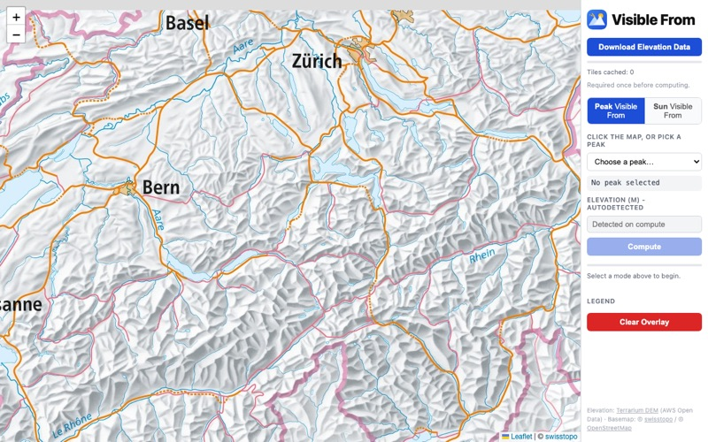
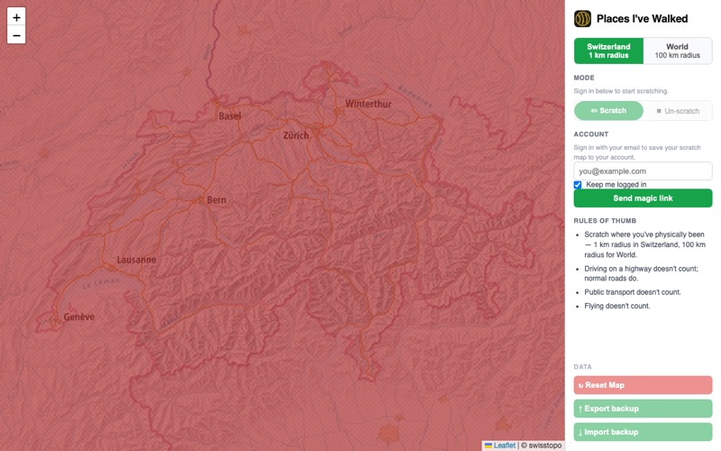
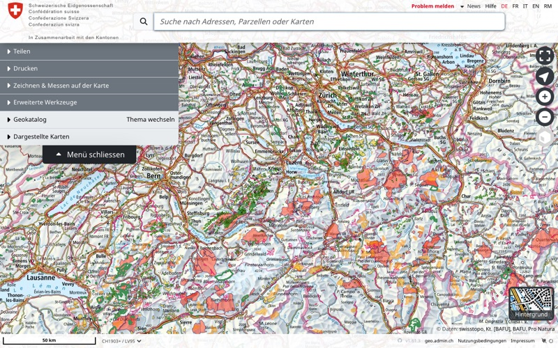
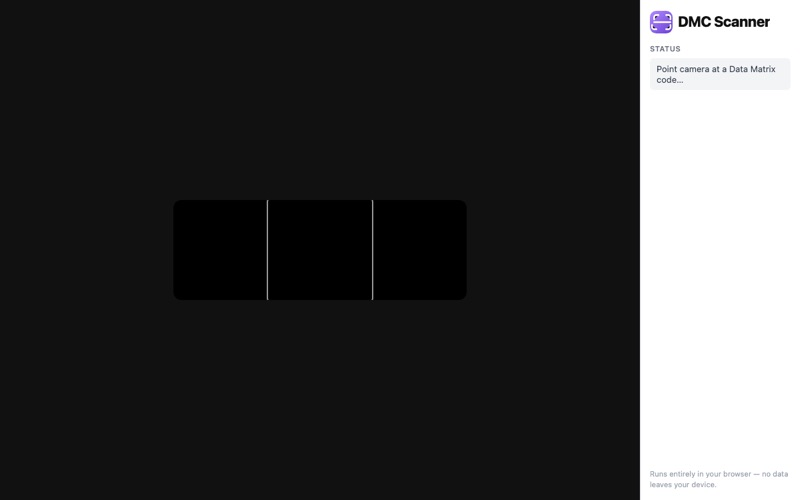

Nolo's Apps & Links

Visible From
↗
See which mountain peaks and sun positions are visible from any location, calculated from real terrain data.

Places I've Walked
↗
An interactive scratch-off map of the world — reveal the places you've traveled, saved to your account.

SwissMap — Protected Areas
↗
Switzerland's official map with all protected areas layered on top.

DMC Scanner
↗
Scan Data Matrix codes with your camera and get the decoded text instantly, ready to copy.